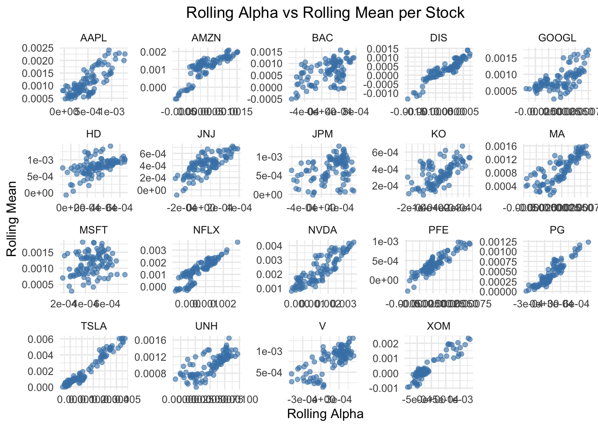
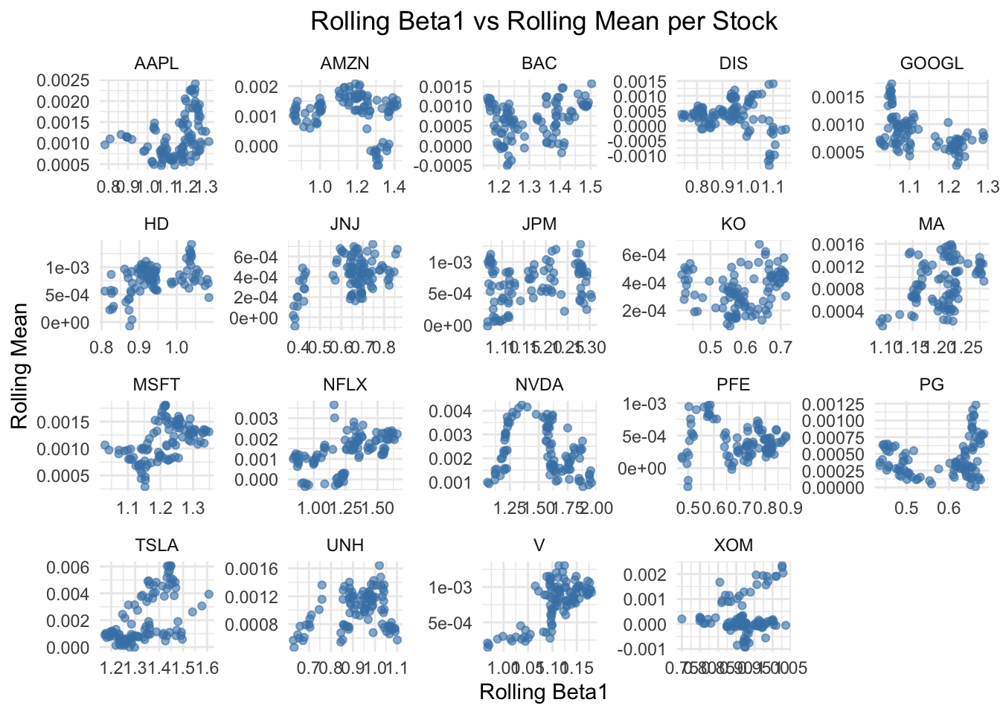

excess_returns_df <-as.data.frame(excess_returns)# Convert Date column to proper Date type if neededexcess_returns_df$Date <-as.Date(excess_returns_df$Date)# Set the Date column as row namesrownames(excess_returns_df) <-as.character(excess_returns_df$Date)# Remove the Date columnexcess_returns_df$Date <-NULLrownames(ff3) <- ff3$Dateff3$Date <-NULL
Code
rolling_ff3_coefficients <-function(returns, ff3_factors, window_size =252, check_interval =21) {# Check that returns and ff3_factors have the same number of rowsif (nrow(returns) !=nrow(ff3_factors)) {stop("returns and ff3_factors must have the same number of rows.") } n <-nrow(returns) stock_names <-colnames(returns) factor_names <-colnames(ff3_factors)# Initialize lists to store rolling results rolling_alpha <-list() rolling_betas <-vector("list", 3) # For 3 factorsnames(rolling_betas) <-paste0("beta_", 1:3)# Prepare empty slots for each stockfor (stock in stock_names) { rolling_alpha[[stock]] <-numeric(0)for (beta_key innames(rolling_betas)) { rolling_betas[[beta_key]][[stock]] <-numeric(0) } } rolling_dates <-character(0)# Iterate over rolling windowsfor (i inseq(window_size, n, by = check_interval)) { start_idx <- i - window_size +1 end_idx <- i returns_window <- returns[start_idx:end_idx, , drop =FALSE] factors_window <- ff3_factors[start_idx:end_idx, , drop =FALSE]# Construct the model formula: y ~ MKT_RF + SMB + HML model_formula <-as.formula(paste("y ~", paste(factor_names, collapse =" + ")))for (stock in stock_names) { y <- returns_window[[stock]] data_for_reg <-cbind(y = y, factors_window)# Fit the linear model model <-lm(model_formula, data = data_for_reg) coefs <-coef(model)# Store alpha and betas rolling_alpha[[stock]] <-c(rolling_alpha[[stock]], coefs[1]) # alpha (intercept)for (j in1:3) { rolling_betas[[paste0("beta_", j)]][[stock]] <-c(rolling_betas[[paste0("beta_", j)]][[stock]], coefs[j+1]) } }# Record the date of the last observation in the window rolling_dates <-c(rolling_dates, rownames(returns)[end_idx]) }# Convert lists to data frames df_alpha <-as.data.frame(rolling_alpha, row.names = rolling_dates) df_betas <-lapply(rolling_betas, function(x) as.data.frame(x, row.names = rolling_dates))# Return a list with alpha and each beta DataFramereturn(list(alpha = df_alpha,beta_1 = df_betas[["beta_1"]],beta_2 = df_betas[["beta_2"]],beta_3 = df_betas[["beta_3"]] ))}# Example usage:# result <- rolling_ff3_coefficients(returns, ff3_factors)# df_alpha <- result$alpha# df_beta_1 <- result$beta_1# df_beta_2 <- result$beta_2# df_beta_3 <- result$beta_3
We apply the Fama-French three-factor model to the returns of the selected assets. The model is expressed as:
Alpha measures an investment’s excess return over a benchmark – the market or factor-based expectations. In models like Fama-French, it captures the portion of returns unexplained by factors such as market risk or size. In reality, alpha often reverts to zero as market inefficiencies are corrected, making it hard to find and sustain a constantly positive alpha. Investors aim for consistent, positive alpha as a source of stable excess return.
Code
library(ggridges)alphas_long <- alphas_df %>%pivot_longer(cols =-Date, names_to ="Stock", values_to ="Alpha")ggplot(alphas_long, aes(x =as.Date(Date), y = Alpha, color = Stock)) +geom_line(size =1) +# Use lines for trendslabs(title ="Alphas Over Time",x ="Date",y ="Alpha",color ="Stock" ) +theme_minimal() +# Apply a clean themetheme(legend.position ="top")

Code
alphas_long <- alphas_long %>%group_by(Stock) %>%mutate(MeanAlpha =mean(Alpha)) %>%ungroup()ggplot(alphas_long, aes(x = Alpha, y =reorder(Stock, MeanAlpha), fill = MeanAlpha)) +geom_density_ridges(scale =1.5, rel_min_height =0.01) +scale_fill_gradient(name ="Mean Alpha", low ="blue", high ="red") +labs(title ="Ridgeline Plot of Alpha Distributions by Stock",x ="Alpha",y ="Stock" ) +theme_minimal() +theme(legend.position ="top")
Picking joint bandwidth of 0.000137
Most alphas fluctuate around zero.
3.1.1.1 Stocks with no excess return: PG, BRK.B, JNJ, KO, PFE
The alpha distributions for these low-performing stocks exhibit compact and peaked shapes, with the mean centered around zero.
This indicates that these stocks consistently achieve alpha values near zero, aligning closely with the efficient market hypothesis. In an efficient market, these stocks do not present persistent opportunities for abnormal returns.
3.1.1.2 Stocks with stable positive excess return: AAPL, MSFT, HD, GOOGL, JPM, V
These high-performing stocks have a consistently positive alpha, the distribution is less compact, but still has a peak.
This indicates that these stocks consistently outperform the Fama-French Factor Model, with a constant excess return. The excess return is unexplained by Market Return, SMB and HML. We might be able to explain the excess return by introducing new factors.
Long-term investment on these stocks will yield a positive excess return over Fama-French Factors.
3.1.1.3 Stocks with very unstable positive excess return: NVDA, TSLA, NFLX, AMZN
The alpha distributions for high-performing stocks display very fat tails and lack a distinct peak, resulting in a flat and widespread shape.
These stocks exhibit significantly higher mean alphas, indicating periods of consistent outperformance of the efficient market. However, the flat distribution curve suggests that their alpha is highly unstable, and does not stabilize around a single value for long. Once the excess return appear, it will soon be exploited by market players, but the excess return often reappear shortly.
These stocks are uprising assets with great potentials and risks at the same time. The profit could be very large over a short period of time, but it is unpredictable.
3.1.2 Observations on the Distributions of exposure to Market Risk
\(\beta_1\) in the Fama-French model represents the factor loading for market risk, measuring how sensitive an asset is to overall market movements. A \(\beta_1 > 1\) indicates that the asset is more volatile than the market, while \(\beta_1 < 1\) suggests it is less sensitive to market changes. It evaluates the portion of an asset’s returns driven by systematic market risk, making it crucial for understanding exposure to broad economic trends. Investors rely on \(\beta_1\) to assess the asset’s alignment with market performance and its role in portfolio risk management.
Although it often appears to be so, a high \(\beta_1\) does not essentially mean a good sign. Because high volatility also brings more risk, causing significant loss when the market is going down. when the market is going upward, it is usually preferred to invest on assets with higher exposure to market risk.
Code
beta1_long <- beta1_df %>%pivot_longer(cols =-Date, names_to ="Stock", values_to ="beta1")ggplot(beta1_long, aes(x =as.Date(Date), y = beta1, color = Stock)) +geom_line(size =1) +# Use lines for trendslabs(title ="Beta1 Over Time",x ="Date",y ="beta1",color ="Stock" ) +theme_minimal() +# Apply a clean themetheme(legend.position ="top")
Code
beta1_long <- beta1_long %>%group_by(Stock) %>%mutate(MeanBeta1 =mean(beta1)) %>%ungroup()ggplot(beta1_long, aes(x = beta1, y =reorder(Stock, MeanBeta1), fill = MeanBeta1)) +geom_density_ridges(scale =1.5, rel_min_height =0.01) +scale_fill_gradient(name ="Mean Beta1", low ="blue", high ="red") +labs(title ="Ridgeline Plot of Beta1 Distributions by Stock",x ="Beta",y ="Stock" ) +theme_minimal() +theme(legend.position ="top")
Picking joint bandwidth of 0.0364
3.1.2.1 Stocks with high exposure to Market Risk: NVDA, TSLA, NFLX, MSFT, JPM, AMZN, AAPL, GOOGL, etc.
Stocks that have a high \(\beta_1\), reflecting significant sensitivity to market movements. These stocks often belong to technology, growth, or finance sectors, which are more volatile and influenced by broad economic trends.
3.1.2.2 Stocks with low exposure to Market Risk: BRK.B, UNH, XOM, JNJ, KO, PG, etc.
Stocks that have a low \(\beta_1\), indicating less sensitivity to market movements. These companies are often in stable industries such as consumer staples, healthcare, or energy, providing consistent performance regardless of market volatility.
3.1.3 Observations on the Distributions of exposure to SMB and HML
Due to the length of the project, the effects of the \(\beta_2\) and \(\beta_3\) will not be discussed here. The plots of the factor loadings by stocks are shown below. We can notice that the coefficient of SMB and coefficient of HML seem to be negatively correlated. This is because small-cap stocks (high SMB) often exhibit growth characteristics (low HML), while large-cap stocks (low SMB) tend to align with value characteristics (high HML).
Code
beta2_long <- beta2_df %>%pivot_longer(cols =-Date, names_to ="Stock", values_to ="beta2")ggplot(beta2_long, aes(x =as.Date(Date), y = beta2, color = Stock)) +geom_line(size =1) +# Use lines for trendslabs(title ="Beta2 Over Time",x ="Date",y ="beta2",color ="Stock" ) +theme_minimal() +# Apply a clean themetheme(legend.position ="top")

Code
beta2_long <- beta2_long %>%group_by(Stock) %>%mutate(MeanBeta2 =mean(beta2)) %>%ungroup()ggplot(beta2_long, aes(x = beta2, y =reorder(Stock, MeanBeta2), fill = MeanBeta2)) +geom_density_ridges(scale =1.5, rel_min_height =0.01) +scale_fill_gradient(name ="Mean Beta2", low ="blue", high ="red") +labs(title ="Ridgeline Plot of Beta2 Distributions by Stock",x ="Beta2",y ="Stock" ) +theme_minimal() +theme(legend.position ="top")
Picking joint bandwidth of 0.0471
Code
beta3_long <- beta3_df %>%pivot_longer(cols =-Date, names_to ="Stock", values_to ="beta3")ggplot(beta3_long, aes(x =as.Date(Date), y = beta3, color = Stock)) +geom_line(size =1) +# Use lines for trendslabs(title ="Beta3 Over Time",x ="Date",y ="beta3",color ="Stock" ) +theme_minimal() +# Apply a clean themetheme(legend.position ="top")
Code
beta3_long <- beta3_long %>%group_by(Stock) %>%mutate(MeanBeta3 =mean(beta3)) %>%ungroup()ggplot(beta3_long, aes(x = beta3, y =reorder(Stock, MeanBeta3), fill = MeanBeta3)) +geom_density_ridges(scale =1.5, rel_min_height =0.01) +scale_fill_gradient(name ="Mean Beta3", low ="blue", high ="red") +labs(title ="Ridgeline Plot of Beta3 Distributions by Stock",x ="Beta3",y ="Stock" ) +theme_minimal() +theme(legend.position ="top")
Picking joint bandwidth of 0.0587
3.1.4 Relationship between Factor Loadings
As we can see more clearly in the parallel coordinate plot, the seemingly positive relation between \(\alpha\) and \(\beta_1\) is not very strong. We can only say with confidence that \(\beta_2\) and \(\beta_3\) are indeed negatively correlated.